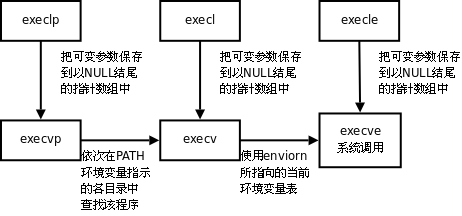

第 30 章 进程
1. 引言
我们知道，每个进程在内核中都有一个进程控制块（PCB）来维护进程相关的信息，Linux 内核的进程控制块是 task_struct 结构体。现在我们全面了解一下其中都有哪些信息。
- 进程 id。系统中每个进程有唯一的 id，在 C 语言中用
pid_t类型表示，其实就是一个非负整数。 - 进程的状态，有运行、挂起、停止、僵尸等状态。
- 进程切换时需要保存和恢复的一些 CPU 寄存器。
- 描述虚拟地址空间的信息。
- 描述控制终端的信息。
- 当前工作目录（Current Working Directory）。
umask掩码。- 文件描述符表，包含很多指向
file结构体的指针。 - 和信号相关的信息。
- 用户 id 和组 id。
- 控制终端、Session 和进程组。
- 进程可以使用的资源上限（Resource Limit）。
目前读者并不需要理解这些信息的细节，在随后几章中讲到某一项时会再次提醒读者它是保存在 PCB 中的。
fork 和 exec 是本章要介绍的两个重要的系统调用。fork 的作用是根据一个现有的进程复制出一个新进程，原来的进程称为父进程（Parent Process），新进程称为子进程（Child Process）。系统中同时运行着很多进程，这些进程都是从最初只有一个进程开始一个一个复制出来的。在 Shell 下输入命令可以运行一个程序，是因为 Shell 进程在读取用户输入的命令之后会调用 fork 复制出一个新的 Shell 进程，然后新的 Shell 进程调用 exec 执行新的程序。
我们知道一个程序可以多次加载到内存，成为同时运行的多个进程，例如可以同时开多个终端窗口运行 /bin/bash，另一方面，一个进程在调用 exec 前后也可以分别执行两个不同的程序，例如在 Shell 提示符下输入命令 ls，首先 fork 创建子进程，这时子进程仍在执行 /bin/bash 程序，然后子进程调用 exec 执行新的程序 /bin/ls，如下图所示。
图 30.1. fork/exec

在第 28 章「文件与 I/O」第 3 节「open/close」中我们做过一个实验：用 umask 命令设置 Shell 进程的 umask 掩码，然后运行程序 a.out，结果 a.out 进程的 umask 掩码也和 Shell 进程一样。现在可以解释了，因为 a.out 进程是 Shell 进程的子进程，子进程的 PCB 是根据父进程复制而来的，所以其中的 umask 掩码也和父进程一样。同样道理，子进程的当前工作目录也和父进程一样，所以我们可以用 cd 命令改变 Shell 进程的当前目录，然后用 ls 命令列出那个目录下的文件，ls 进程其实是在列自己的当前目录，而不是 Shell 进程的当前目录，只不过 ls 进程的当前目录正好和 Shell 进程相同。有一个例外，子进程 PCB 中的进程 id 和父进程是不同的。
2. 环境变量
先前讲过，exec 系统调用执行新程序时会把命令行参数和环境变量表传递给 main 函数，它们在整个进程地址空间中的位置如下图所示。
图 30.2. 进程地址空间

和命令行参数 argv 类似，环境变量表也是一组字符串，如下图所示。
图 30.3. 环境变量

libc 中定义的全局变量 environ 指向环境变量表，environ 没有包含在任何头文件中，所以在使用时要用 extern 声明。例如：
例 30.1. 打印环境变量
#include <stdio.h>
int main(void)
{
extern char **environ;
int i;
for(i=0; environ[i]!=NULL; i++)
printf("%s\n", environ[i]);
return 0;
}
执行结果为
$ ./a.out
SSH_AGENT_PID=5717
SHELL=/bin/bash
DESKTOP_STARTUP_ID=
TERM=xterm
...
由于父进程在调用 fork 创建子进程时会把自己的环境变量表也复制给子进程，所以 a.out 打印的环境变量和 Shell 进程的环境变量是相同的。
按照惯例，环境变量字符串都是 name=value 这样的形式，大多数 name 由大写字母加下划线组成，一般把 name 的部分叫做环境变量，value 的部分则是环境变量的值。环境变量定义了进程的运行环境，一些比较重要的环境变量的含义如下：
-
PATH：可执行文件的搜索路径。
ls命令也是一个程序，执行它不需要提供完整的路径名/bin/ls，然而通常我们执行当前目录下的程序a.out却需要提供完整的路径名./a.out，这是因为PATH环境变量的值里面包含了ls命令所在的目录/bin，却不包含a.out所在的目录。PATH环境变量的值可以包含多个目录，用:号隔开。在 Shell 中用echo命令可以查看这个环境变量的值：$ echo $PATH /usr/local/sbin:/usr/local/bin:/usr/sbin:/usr/bin:/sbin:/bin:/usr/games -
SHELL：当前 Shell，它的值通常是
/bin/bash。 -
TERM：当前终端类型，在图形界面终端下它的值通常是
xterm，终端类型决定了一些程序的输出显示方式，比如图形界面终端可以显示汉字，而字符终端一般不行。 -
LANG：语言和 locale，决定了字符编码以及时间、货币等信息的显示格式。
-
HOME：当前用户主目录的路径，很多程序需要在主目录下保存配置文件，使得每个用户在运行该程序时都有自己的一套配置。
用 environ 指针可以查看所有环境变量字符串，但是不够方便，如果给出 name 要在环境变量表中查找它对应的 value，可以用 getenv 函数。
#include <stdlib.h>
char *getenv(const char *name);
getenv 的返回值是指向 value 的指针，若未找到则为 NULL。
修改环境变量可以用以下函数
#include <stdlib.h>
int setenv(const char *name, const char *value, int rewrite);
void unsetenv(const char *name);
putenv 和 setenv 函数若成功则返回为 0，若出错则返回非 0。
setenv 将环境变量 name 的值设置为 value。如果已存在环境变量 name，那么
- 若 rewrite 非 0，则覆盖原来的定义；
- 若 rewrite 为 0，则不覆盖原来的定义，也不返回错误。
unsetenv 删除 name 的定义。即使 name 没有定义也不返回错误。
例 30.2. 修改环境变量
#include <stdlib.h>
#include <stdio.h>
int main(void)
{
printf("PATH=%s\n", getenv("PATH"));
setenv("PATH", "hello", 1);
printf("PATH=%s\n", getenv("PATH"));
return 0;
}
$ ./a.out
PATH=/usr/local/sbin:/usr/local/bin:/usr/sbin:/usr/bin:/sbin:/bin:/usr/games
PATH=hello
$ echo $PATH
/usr/local/sbin:/usr/local/bin:/usr/sbin:/usr/bin:/sbin:/bin:/usr/games
可以看出，Shell 进程的环境变量 PATH 传给了 a.out，然后 a.out 修改了 PATH 的值，在 a.out 中能打印出修改后的值，但在 Shell 进程中 PATH 的值没变。父进程在创建子进程时会复制一份环境变量给子进程，但此后二者的环境变量互不影响。
3. 进程控制
3.1. fork 函数
#include <sys/types.h>
#include <unistd.h>
pid_t fork(void);
fork 调用失败则返回 -1，调用成功的返回值见下面的解释。我们通过一个例子来理解 fork 是怎样创建新进程的。
例 30.3. fork
#include <sys/types.h>
#include <unistd.h>
#include <stdio.h>
#include <stdlib.h>
int main(void)
{
pid_t pid;
char *message;
int n;
pid = fork();
if (pid < 0) {
perror("fork failed");
exit(1);
}
if (pid == 0) {
message = "This is the child\n";
n = 6;
} else {
message = "This is the parent\n";
n = 3;
}
for(; n > 0; n--) {
printf(message);
sleep(1);
}
return 0;
}
$ ./a.out
This is the child
This is the parent
This is the child
This is the parent
This is the child
This is the parent
This is the child
$ This is the child
This is the child
这个程序的运行过程如下图所示。
图 30.4. fork

- 父进程初始化。
- 父进程调用
fork，这是一个系统调用，因此进入内核。 - 内核根据父进程复制出一个子进程，父进程和子进程的 PCB 信息相同，用户态代码和数据也相同。因此，子进程现在的状态看起来和父进程一样，做完了初始化，刚调用了 fork 进入内核，还没有从内核返回。
- 现在有两个一模一样的进程看起来都调用了
fork进入内核等待从内核返回（实际上fork只调用了一次），此外系统中还有很多别的进程也等待从内核返回。是父进程先返回还是子进程先返回，还是这两个进程都等待，先去调度执行别的进程，这都不一定，取决于内核的调度算法。 - 如果某个时刻父进程被调度执行了，从内核返回后就从
fork函数返回，保存在变量pid中的返回值是子进程的 id，是一个大于 0 的整数，因此执下面的else分支，然后执行for循环，打印"This is the parent\n"三次之后终止。 - 如果某个时刻子进程被调度执行了，从内核返回后就从
fork函数返回，保存在变量pid中的返回值是 0，因此执行下面的if (pid == 0)分支，然后执行for循环，打印"This is the child\n"六次之后终止。fork调用把父进程的数据复制一份给子进程，但此后二者互不影响，在这个例子中，fork调用之后父进程和子进程的变量message和n被赋予不同的值，互不影响。 - 父进程每打印一条消息就睡眠 1 秒，这时内核调度别的进程执行，在 1 秒这么长的间隙里（对于计算机来说 1 秒很长了）子进程很有可能被调度到。同样地，子进程每打印一条消息就睡眠 1 秒，在这 1 秒期间父进程也很有可能被调度到。所以程序运行的结果基本上是父子进程交替打印，但这也不是一定的，取决于系统中其它进程的运行情况和内核的调度算法，如果系统中其它进程非常繁忙则有可能观察到不同的结果。另外，读者也可以把
sleep(1);去掉看程序的运行结果如何。 - 这个程序是在 Shell 下运行的，因此 Shell 进程是父进程的父进程。父进程运行时 Shell 进程处于等待状态（本章第 3.3 节 「wait 和 waitpid 函数」会讲到这种等待是怎么实现的），当父进程终止时 Shell 进程认为命令执行结束了，于是打印 Shell 提示符，而事实上子进程这时还没结束，所以子进程的消息打印到了 Shell 提示符后面。最后光标停在
This is the child的下一行，这时用户仍然可以敲命令，即使命令不是紧跟在提示符后面，Shell 也能正确读取。
fork 函数的特点概括起来就是「调用一次，返回两次」，在父进程中调用一次，在父进程和子进程中各返回一次。从上图可以看出，一开始是一个控制流程，调用 fork 之后发生了分叉，变成两个控制流程，这也就是「fork」（分叉）这个名字的由来了。子进程中 fork 的返回值是 0，而父进程中 fork 的返回值则是子进程的 id（从根本上说 fork 是从内核返回的，内核自有办法让父进程和子进程返回不同的值），这样当 fork 函数返回后，程序员可以根据返回值的不同让父进程和子进程执行不同的代码。
fork 的返回值这样规定是有道理的。fork 在子进程中返回 0，子进程仍可以调用 getpid 函数得到自己的进程 id，也可以调用 getppid 函数得到父进程的 id。在父进程中用 getpid 可以得到自己的进程 id，然而要想得到子进程的 id，只有将 fork 的返回值记录下来，别无它法。
fork 的另一个特性是所有由父进程打开的描述符都被复制到子进程中。父、子进程中相同编号的文件描述符在内核中指向同一个 file 结构体，也就是说，file 结构体的引用计数要增加。
用 gdb 调试多进程的程序会遇到困难，gdb 只能跟踪一个进程（默认是跟踪父进程），而不能同时跟踪多个进程，但可以设置 gdb 在 fork 之后跟踪父进程还是子进程。以上面的程序为例：
$ gcc main.c -g
$ gdb a.out
GNU gdb 6.8-debian
Copyright (C) 2008 Free Software Foundation, Inc.
License GPLv3+: GNU GPL version 3 or later <http://gnu.org/licenses/gpl.html>
This is free software: you are free to change and redistribute it.
There is NO WARRANTY, to the extent permitted by law. Type "show copying"
and "show warranty" for details.
This GDB was configured as "i486-linux-gnu"...
(gdb) l
2 #include <unistd.h>
3 #include <stdio.h>
4 #include <stdlib.h>
5
6 int main(void)
7 {
8 pid_t pid;
9 char *message;
10 int n;
11 pid = fork();
(gdb)
12 if(pid<0) {
13 perror("fork failed");
14 exit(1);
15 }
16 if(pid==0) {
17 message = "This is the child\n";
18 n = 6;
19 } else {
20 message = "This is the parent\n";
21 n = 3;
(gdb) b 17
Breakpoint 1 at 0x8048481: file main.c, line 17.
(gdb) set follow-fork-mode child
(gdb) r
Starting program: /home/akaedu/a.out
This is the parent
[Switching to process 30725]
Breakpoint 1, main () at main.c:17
17 message = "This is the child\n";
(gdb) This is the parent
This is the parent
set follow-fork-mode child 命令设置 gdb 在 fork 之后跟踪子进程（set follow-fork-mode parent 则是跟踪父进程），然后用 run 命令，看到的现象是父进程一直在运行，在 (gdb) 提示符下打印消息，而子进程被先前设的断点打断了。
3.2. exec 函数
用 fork 创建子进程后执行的是和父进程相同的程序（但有可能执行不同的代码分支），子进程往往要调用一种 exec 函数以执行另一个程序。当进程调用一种 exec 函数时，该进程的用户空间代码和数据完全被新程序替换，从新程序的启动例程开始执行。调用 exec 并不创建新进程，所以调用 exec 前后该进程的 id 并未改变。
其实有六种以 exec 开头的函数，统称 exec 函数：
#include <unistd.h>
int execl(const char *path, const char *arg, ...);
int execlp(const char *file, const char *arg, ...);
int execle(const char *path, const char *arg, ..., char *const envp[]);
int execv(const char *path, char *const argv[]);
int execvp(const char *file, char *const argv[]);
int execve(const char *path, char *const argv[], char *const envp[]);
这些函数如果调用成功则加载新的程序从启动代码开始执行，不再返回，如果调用出错则返回 -1，所以 exec 函数只有出错的返回值而没有成功的返回值。
这些函数原型看起来很容易混，但只要掌握了规律就很好记。不带字母 p（表示 path）的 exec 函数第一个参数必须是程序的相对路径或绝对路径，例如 "/bin/ls" 或 "./a.out"，而不能是 "ls" 或 "a.out"。对于带字母 p 的函数：
- 如果参数中包含
/，则将其视为路径名。 - 否则视为不带路径的程序名，在
PATH环境变量的目录列表中搜索这个程序。
带有字母 l（表示 list）的 exec 函数要求将新程序的每个命令行参数都当作一个参数传给它，命令行参数的个数是可变的，因此函数原型中有 ...，... 中的最后一个可变参数应该是 NULL，起 sentinel 的作用。
对于带有字母 v（表示 vector）的函数，则应该先构造一个指向各参数的指针数组，然后将该数组的首地址当作参数传给它，数组中的最后一个指针也应该是 NULL，就像 main 函数的 argv 参数或者环境变量表一样。
对于以 e（表示 environment）结尾的 exec 函数，可以把一份新的环境变量表传给它，其他 exec 函数仍使用当前的环境变量表执行新程序。
exec 调用举例如下：
char *const ps_argv[] ={"ps", "-o", "pid,ppid,pgrp,session,tpgid,comm", NULL};
char *const ps_envp[] ={"PATH=/bin:/usr/bin", "TERM=console", NULL};
execl("/bin/ps", "ps", "-o", "pid,ppid,pgrp,session,tpgid,comm", NULL);
execv("/bin/ps", ps_argv);
execle("/bin/ps", "ps", "-o", "pid,ppid,pgrp,session,tpgid,comm", NULL, ps_envp);
execve("/bin/ps", ps_argv, ps_envp);
execlp("ps", "ps", "-o", "pid,ppid,pgrp,session,tpgid,comm", NULL);
execvp("ps", ps_argv);
事实上，只有 execve 是真正的系统调用，其它五个函数最终都调用 execve，所以 execve 在 man 手册第 2 节，其它函数在 man 手册第 3 节。这些函数之间的关系如下图所示。
图 30.5. exec 函数族

一个完整的例子：
#include <unistd.h>
#include <stdlib.h>
int main(void)
{
execlp("ps", "ps", "-o", "pid,ppid,pgrp,session,tpgid,comm", NULL);
perror("exec ps");
exit(1);
}
执行此程序则得到：
$ ./a.out
PID PPID PGRP SESS TPGID COMMAND
6614 6608 6614 6614 7199 bash
7199 6614 7199 6614 7199 ps
由于 exec 函数只有错误返回值，只要返回了一定是出错了，所以不需要判断它的返回值，直接在后面调用 perror 即可。注意在调用 execlp 时传了两个 "ps" 参数，第一个 "ps" 是程序名，execlp 函数要在 PATH 环境变量中找到这个程序并执行它，而第二个 "ps" 是第一个命令行参数，execlp 函数并不关心它的值，只是简单地把它传给 ps 程序，ps 程序可以通过 main 函数的 argv[0] 取到这个参数。
调用 exec 后，原来打开的文件描述符仍然是打开的[37]。利用这一点可以实现 I/O 重定向。先看一个简单的例子，把标准输入转成大写然后打印到标准输出：
[37] 事实上，在每个文件描述符中有一个 close-on-exec 标志，如果该标志为 1，则调用 exec 时关闭这个文件描述符。该标志默认为 0，可以用 fcntl 函数将它置 1，本书不讨论该标志为 1 的情况。
例 30.4. upper
/* upper.c */
#include <stdio.h>
int main(void)
{
int ch;
while((ch = getchar()) != EOF) {
putchar(toupper(ch));
}
return 0;
}
运行结果如下：
$ ./upper
hello THERE
HELLO THERE
（按 Ctrl-D 表示 EOF）
$
使用 Shell 重定向：
$ cat file.txt
this is the file, file.txt, it is all lower case.
$ ./upper < file.txt
THIS IS THE FILE, FILE.TXT, IT IS ALL LOWER CASE.
如果希望把待转换的文件名放在命令行参数中，而不是借助于输入重定向，我们可以利用 upper 程序的现有功能，再写一个包装程序 wrapper。
例 30.5. wrapper
/* wrapper.c */
#include <unistd.h>
#include <stdlib.h>
#include <stdio.h>
#include <fcntl.h>
int main(int argc, char *argv[])
{
int fd;
if (argc != 2) {
fputs("usage: wrapper file\n", stderr);
exit(1);
}
fd = open(argv[1], O_RDONLY);
if(fd<0) {
perror("open");
exit(1);
}
dup2(fd, STDIN_FILENO);
close(fd);
execl("./upper", "upper", NULL);
perror("exec ./upper");
exit(1);
}
wrapper 程序将命令行参数当作文件名打开，将标准输入重定向到这个文件，然后调用 exec 执行 upper 程序，这时原来打开的文件描述符仍然是打开的，upper 程序只负责从标准输入读入字符转成大写，并不关心标准输入对应的是文件还是终端。运行结果如下：
$ ./wrapper file.txt
THIS IS THE FILE, FILE.TXT, IT IS ALL LOWER CASE.
3.3. wait 和 waitpid 函数
一个进程在终止时会关闭所有文件描述符，释放在用户空间分配的内存，但它的 PCB 还保留着，内核在其中保存了一些信息：如果是正常终止则保存着退出状态，如果是异常终止则保存着导致该进程终止的信号是哪个。这个进程的父进程可以调用 wait 或 waitpid 获取这些信息，然后彻底清除掉这个进程。我们知道一个进程的退出状态可以在 Shell 中用特殊变量 $? 查看，因为 Shell 是它的父进程，当它终止时 Shell 调用 wait 或 waitpid 得到它的退出状态同时彻底清除掉这个进程。
如果一个进程已经终止，但是它的父进程尚未调用 wait 或 waitpid 对它进行清理，这时的进程状态称为僵尸（Zombie）进程。任何进程在刚终止时都是僵尸进程，正常情况下，僵尸进程都立刻被父进程清理了，为了观察到僵尸进程，我们自己写一个不正常的程序，父进程 fork 出子进程，子进程终止，而父进程既不终止也不调用 wait 清理子进程：
#include <unistd.h>
#include <stdlib.h>
int main(void)
{
pid_t pid=fork();
if(pid<0) {
perror("fork");
exit(1);
}
if(pid>0) { /* parent */
while(1);
}
/* child */
return 0;
}
在后台运行这个程序，然后用 ps 命令查看：
$ ./a.out &
[1] 6130
$ ps u
USER PID %CPU %MEM VSZ RSS TTY STAT START TIME COMMAND
akaedu 6016 0.0 0.3 5724 3140 pts/0 Ss 08:41 0:00 bash
akaedu 6130 97.2 0.0 1536 284 pts/0 R 08:44 14:33 ./a.out
akaedu 6131 0.0 0.0 0 0 pts/0 Z 08:44 0:00 [a.out] <defunct>
akaedu 6163 0.0 0.0 2620 1000 pts/0 R+ 08:59 0:00 ps u
在 ./a.out 命令后面加个 & 表示后台运行，Shell 不等待这个进程终止就立刻打印提示符并等待用户输命令。现在 Shell 是位于前台的，用户在终端的输入会被 Shell 读取，后台进程是读不到终端输入的。第二条命令 ps u 是在前台运行的，在此期间 Shell 进程和 ./a.out 进程都在后台运行，等到 ps u 命令结束时 Shell 进程又重新回到前台。在第 33 章「信号」和第 34 章「终端、作业控制与守护进程」将会进一步解释前台（Foreground）和后台（Backgroud）的概念。
父进程的 pid 是 6130，子进程是僵尸进程，pid 是 6131，ps 命令显示僵尸进程的状态为 Z，在命令行一栏还显示 <defunct>。
如果一个父进程终止，而它的子进程还存在（这些子进程或者仍在运行，或者已经是僵尸进程了），则这些子进程的父进程改为 init 进程。init 是系统中的一个特殊进程，通常程序文件是 /sbin/init，进程 id 是 1，在系统启动时负责启动各种系统服务，之后就负责清理子进程，只要有子进程终止，init 就会调用 wait 函数清理它。
僵尸进程是不能用 kill 命令清除掉的，因为 kill 命令只是用来终止进程的，而僵尸进程已经终止了。思考一下，用什么办法可以清除掉僵尸进程？
wait 和 waitpid函数的原型是：
#include <sys/types.h>
#include <sys/wait.h>
pid_t wait(int *status);
pid_t waitpid(pid_t pid, int *status, int options);
若调用成功则返回清理掉的子进程 id，若调用出错则返回 -1。父进程调用 wait 或 waitpid 时可能会：
- 阻塞（如果它的所有子进程都还在运行）。
- 带子进程的终止信息立即返回（如果一个子进程已终止，正等待父进程读取其终止信息）。
- 出错立即返回（如果它没有任何子进程）。
这两个函数的区别是：
- 如果父进程的所有子进程都还在运行，调用
wait将使父进程阻塞，而调用waitpid时如果在options参数中指定WNOHANG可以使父进程不阻塞而立即返回 0。 wait等待第一个终止的子进程，而waitpid可以通过pid参数指定等待哪一个子进程。
可见，调用 wait 和 waitpid 不仅可以获得子进程的终止信息，还可以使父进程阻塞等待子进程终止，起到进程间同步的作用。如果参数 status 不是空指针，则子进程的终止信息通过这个参数传出，如果只是为了同步而不关心子进程的终止信息，可以将 status 参数指定为 NULL。
例 30.6. waitpid
#include <sys/types.h>
#include <sys/wait.h>
#include <unistd.h>
#include <stdio.h>
#include <stdlib.h>
int main(void)
{
pid_t pid;
pid = fork();
if (pid < 0) {
perror("fork failed");
exit(1);
}
if (pid == 0) {
int i;
for (i = 3; i > 0; i--) {
printf("This is the child\n");
sleep(1);
}
exit(3);
} else {
int stat_val;
waitpid(pid, &stat_val, 0);
if (WIFEXITED(stat_val))
printf("Child exited with code %d\n", WEXITSTATUS(stat_val));
else if (WIFSIGNALED(stat_val))
printf("Child terminated abnormally, signal %d\n", WTERMSIG(stat_val));
}
return 0;
}
子进程的终止信息在一个 int 中包含了多个字段，用宏定义可以取出其中的每个字段：如果子进程是正常终止的，WIFEXITED 取出的字段值非零，WEXITSTATUS 取出的字段值就是子进程的退出状态；如果子进程是收到信号而异常终止的，WIFSIGNALED 取出的字段值非零，WTERMSIG 取出的字段值就是信号的编号。作为练习，请读者从头文件里查一下这些宏做了什么运算，是如何取出字段值的。
习题
- 请读者修改例 30.6「waitpid」的代码和实验条件，使它产生「Child terminated abnormally」的输出。
4. 进程间通信
每个进程各自有不同的用户地址空间，任何一个进程的全局变量在另一个进程中都看不到，所以进程之间要交换数据必须通过内核，在内核中开辟一块缓冲区，进程 1 把数据从用户空间拷到内核缓冲区，进程 2 再从内核缓冲区把数据读走，内核提供的这种机制称为进程间通信（IPC，InterProcess Communication）。如下图所示。
图 30.6. 进程间通信

4.1. 管道
管道是一种最基本的 IPC 机制，由 pipe 函数创建：
#include <unistd.h>
int pipe(int filedes[2]);
调用 pipe 函数时在内核中开辟一块缓冲区（称为管道）用于通信，它有一个读端一个写端，然后通过 filedes 参数传出给用户程序两个文件描述符，filedes[0] 指向管道的读端，filedes[1] 指向管道的写端（很好记，就像 0 是标准输入 1 是标准输出一样）。所以管道在用户程序看起来就像一个打开的文件，通过 read(filedes[0]); 或者 write(filedes[1]); 向这个文件读写数据其实是在读写内核缓冲区。pipe 函数调用成功返回 0，调用失败返回 -1。
开辟了管道之后如何实现两个进程间的通信呢？比如可以按下面的步骤通信。
图 30.7. 管道

- 父进程调用
pipe开辟管道，得到两个文件描述符指向管道的两端。 - 父进程调用
fork创建子进程，那么子进程也有两个文件描述符指向同一管道。 - 父进程关闭管道读端，子进程关闭管道写端。父进程可以往管道里写，子进程可以从管道里读，管道是用环形队列实现的，数据从写端流入从读端流出，这样就实现了进程间通信。
例 30.7. 管道
#include <stdlib.h>
#include <unistd.h>
#define MAXLINE 80
int main(void)
{
int n;
int fd[2];
pid_t pid;
char line[MAXLINE];
if (pipe(fd) < 0) {
perror("pipe");
exit(1);
}
if ((pid = fork()) < 0) {
perror("fork");
exit(1);
}
if (pid > 0) { /* parent */
close(fd[0]);
write(fd[1], "hello world\n", 12);
wait(NULL);
} else { /* child */
close(fd[1]);
n = read(fd[0], line, MAXLINE);
write(STDOUT_FILENO, line, n);
}
return 0;
}
使用管道有一些限制：
- 两个进程通过一个管道只能实现单向通信，比如上面的例子，父进程写子进程读，如果有时候也需要子进程写父进程读，就必须另开一个管道。请读者思考，如果只开一个管道，但是父进程不关闭读端，子进程也不关闭写端，双方都有读端和写端，为什么不能实现双向通信？
- 管道的读写端通过打开的文件描述符来传递，因此要通信的两个进程必须从它们的公共祖先那里继承管道文件描述符。上面的例子是父进程把文件描述符传给子进程之后父子进程之间通信，也可以父进程
fork两次，把文件描述符传给两个子进程，然后两个子进程之间通信，总之需要通过fork传递文件描述符使两个进程都能访问同一管道，它们才能通信。
使用管道需要注意以下 4 种特殊情况（假设都是阻塞 I/O 操作，没有设置 O_NONBLOCK 标志）：
- 如果所有指向管道写端的文件描述符都关闭了（管道写端的引用计数等于 0），而仍然有进程从管道的读端读数据，那么管道中剩余的数据都被读取后，再次
read会返回 0，就像读到文件末尾一样。 - 如果有指向管道写端的文件描述符没关闭（管道写端的引用计数大于 0），而持有管道写端的进程也没有向管道中写数据，这时有进程从管道读端读数据，那么管道中剩余的数据都被读取后，再次
read会阻塞，直到管道中有数据可读了才读取数据并返回。 - 如果所有指向管道读端的文件描述符都关闭了（管道读端的引用计数等于 0），这时有进程向管道的写端
write，那么该进程会收到信号SIGPIPE，通常会导致进程异常终止。在第 33 章「信号」会讲到怎样使SIGPIPE信号不终止进程。 - 如果有指向管道读端的文件描述符没关闭（管道读端的引用计数大于 0），而持有管道读端的进程也没有从管道中读数据，这时有进程向管道写端写数据，那么在管道被写满时再次
write会阻塞，直到管道中有空位置了才写入数据并返回。
管道的这四种特殊情况具有普遍意义。在第 37 章「socket 编程」要讲的 TCP socket 也具有管道的这些特性。
习题
- 在例 30.7「管道」中，父进程只用到写端，因而把读端关闭，子进程只用到读端，因而把写端关闭，然后互相通信，不使用的读端或写端必须关闭，请读者想一想如果不关闭会有什么问题。
- 请读者修改例 30.7「管道」的代码和实验条件，验证我上面所说的四种特殊情况。
4.2. 其它 IPC 机制
进程间通信必须通过内核提供的通道，而且必须有一种办法在进程中标识内核提供的某个通道，上一节讲的管道是用打开的文件描述符来标识的。如果要互相通信的几个进程没有从公共祖先那里继承文件描述符，它们怎么通信呢？内核提供一条通道不成问题，问题是如何标识这条通道才能使各进程都可以访问它？文件系统中的路径名是全局的，各进程都可以访问，因此可以用文件系统中的路径名来标识一个 IPC 通道。
FIFO 和 UNIX Domain Socket 这两种 IPC 机制都是利用文件系统中的特殊文件来标识的。可以用 mkfifo 命令创建一个 FIFO 文件：
$ mkfifo hello
$ ls -l hello
prw-r--r-- 1 akaedu akaedu 0 2008-10-30 10:44 hello
FIFO 文件在磁盘上没有数据块，仅用来标识内核中的一条通道，各进程可以打开这个文件进行 read/write，实际上是在读写内核通道（根本原因在于这个 file 结构体所指向的 read、write 函数和常规文件不一样），这样就实现了进程间通信。UNIX Domain Socket 和 FIFO 的原理类似，也需要一个特殊的 socket 文件来标识内核中的通道，例如 /var/run 目录下有很多系统服务的 socket 文件：
$ ls -l /var/run/
total 52
srw-rw-rw- 1 root root 0 2008-10-30 00:24 acpid.socket
...
srw-rw-rw- 1 root root 0 2008-10-30 00:25 gdm_socket
...
srw-rw-rw- 1 root root 0 2008-10-30 00:24 sdp
...
srwxr-xr-x 1 root root 0 2008-10-30 00:42 synaptic.socket
文件类型 s 表示 socket，这些文件在磁盘上也没有数据块。UNIX Domain Socket 是目前最广泛使用的 IPC 机制，到后面讲 socket 编程时再详细介绍。
现在把进程之间传递信息的各种途径（包括各种 IPC 机制）总结如下：
- 父进程通过
fork可以将打开文件的描述符传递给子进程 - 子进程结束时，父进程调用
wait可以得到子进程的终止信息 - 几个进程可以在文件系统中读写某个共享文件，也可以通过给文件加锁来实现进程间同步
- 进程之间互发信号，一般使用
SIGUSR1和SIGUSR2实现用户自定义功能 - 管道
- FIFO
- mmap 函数，几个进程可以映射同一内存区
- SYS V IPC，以前的 SYS V UNIX 系统实现的 IPC 机制，包括消息队列、信号量和共享内存，现在已经基本废弃
- UNIX Domain Socket，目前最广泛使用的 IPC 机制
5. 练习：实现简单的 Shell
用讲过的各种 C 函数实现一个简单的交互式 Shell，要求：
-
给出提示符，让用户输入一行命令，识别程序名和参数并调用适当的
exec函数执行程序，待执行完成后再次给出提示符。 -
识别和处理以下符号：
- 简单的标准输入输出重定向（
<和>）：仿照例 30.5「wrapper」，先dup2然后exec。 - 管道（
|）：Shell 进程先调用pipe创建一对管道描述符，然后fork出两个子进程，一个子进程关闭读端，调用dup2把写端赋给标准输出，另一个子进程关闭写端，调用dup2把读端赋给标准输入，两个子进程分别调用exec执行程序，而 Shell 进程把管道的两端都关闭，调用wait等待两个子进程终止。
你的程序应该可以处理以下命令：
○ls△-l△-R○>○file1○ ○cat○<○file1○|○wc△-c○>○file1○ ○ 表示零个或多个空格，△ 表示一个或多个空格 - 简单的标准输入输出重定向（